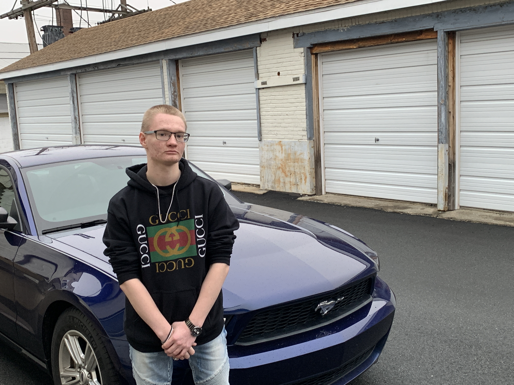

THE Skiddle BLOG
This blog includes updates from L.T. Skiddle's press team regarding upcoming events and performances as well as approved fan-written content.
03/15/2019
New Music Video in Production
L.T. Skiddle is proud to announce his first music video for his hit song:...
Read More 03/04/2019
03/04/2019
L.T. Skiddle Fan-Meet at Disney Orlando!
This week, L.T. Skiddle secretly traveled to Disney Orlando to surprise fans!...
Read More 01/08/2019
01/08/2019
Skiddle Worldwide Tour Announced
L.T. Skiddle is proud to unveil the 8-destination worldwide tour across four continents this summer from August 1st to August 30th...
Read More

12/14/2018
L.T. Skiddle Photoshoot Highlights Available
Can't get enough L.T. Skiddle? Don't worry, neither can we! Enjoy the best and brightest shots of the rising star...
Read More 11/06/2018
11/06/2018
L.T. Skiddle Hits 250 SoundCloud Followers
An important milestone in any young career, the infamous L.T. Skiddle hit 250 followers on SoundCloud today...
Read More